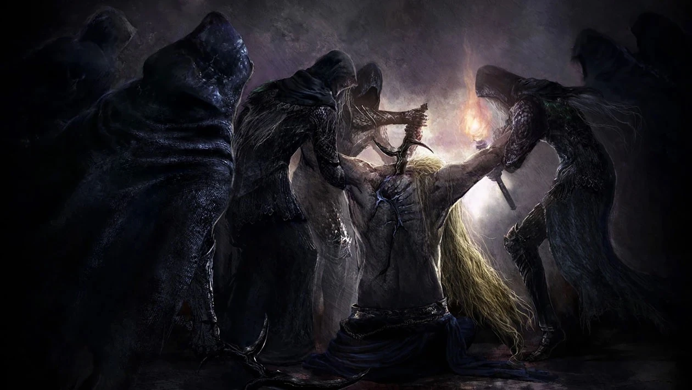
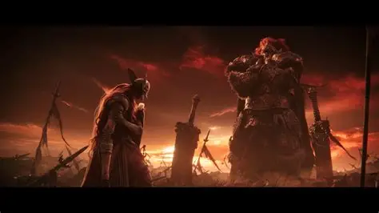

bom nesse site irei falar de

Muito da história de Elden Ring é relacionada com a Rainha Marika, a Eterna. Não se sabe muito sobre suas origens, mas ela é de uma raça conhecida como Numem. Os Numem vêm de fora das Terras Intermédias, são descendentes de habitantes de outro mundo e, embora sejam raros, tem uma vida longa. Em algum momento de sua existência, Marika foi escolhida como uma Empíria, uma escolhida pelos Dedos, agentes da Grande Vontade nas Terras Intermédias. Como Empíria, Marika recebeu uma Sombra, uma entidade completamente leal às suas vontades. A Sombra de Marika se chama Maliketh, um dos bosses de Elden Ring, e sua maior função foi servir como um recipiente para a Runa da Morte, uma das runas do Anel Prístino. Ao conceber a Runa da Morte para Maliketh, Marika "removeu" a morte das Terras Intermédias e deu início à Era da Ordem Dourada. No entanto, isso não terminou com as diversas guerras que aconteciam. Para vencer essas guerras, principalmente aquela contra a realeza Cariana, Marika precisava de alguém que lutasse por ela. Nesse momento entra Hoarah Loux, um guerreiro conhecido por sua perícia no campo de batalha. Marika e Hoarah Loux se casaram e este se tornou Godfrey, o Primeiro Lorde Prístino e consorte da Rainha Marika, a Eterna. Juntos, eles tiveram três filhos: Godwyn, Morgott e Mohg. Do outro lado da guerra, a realeza Cariana era liderada por Radagon. Radagon e Rennala, a Rainha da Lua Cheia, se conheceram em batalha e se apaixonaram, unindo forças para repelir todos os ataques da Ordem Dourada. Juntos, eles também tiveram três filhos: Ranni, Radahn e Rykard.

A história das Terras Intermédias mudou para sempre com a Noite das Facas Negras, o evento que serviu como o estopim para a ruína de todo o reino. Sob o comando oculto da Bruxa Ranni, um grupo de assassinas roubou um fragmento da Runa da Morte e assassinou Godwyn, o Dourado, o filho favorito da Rainha Marika. Esse ataque gerou uma anomalia metafísica inédita: enquanto a alma de Godwyn foi destruída, seu corpo continuou vivo como uma massa corrupta de raízes; em contrapartida, Ranni destruiu seu próprio corpo físico para libertar sua alma do controle dos Dedos Divinos. Tomada pelo luto, pela fúria e pelo desespero, Marika quebrou o Elden Ring com seu martelo, espalhando seus fragmentos, conhecidos como Grandes Runas. Esse ato de rebeldia deu início à Ruptura (The Shattering), uma guerra civil brutal na qual os semideuses lutaram entre si pelo poder absoluto. O conflito causou devastação em massa por todo o continente — como o duelo lendário entre Malenia e Radahn que arruinou Caelid —, mas terminou em um completo impasse, sem nenhum vencedor. Diante do fracasso e da corrupção de seus filhos, a Vontade Maior abandonou os semideuses, devolvendo a Graça aos Maculados para que eles retornassem do exílio, derrotassem os lordes caídos e consertassem o anel primordial.

A batalha entre Malenia, a Lâmina de Miquella, e o General Radahn, o Flagelo das Estrelas, foi o confronto mais devastador e lendário de toda a Ruptura. O duelo aconteceu nas dunas de Caelid, onde os dois semideuses mais poderosos das Terras Intermédias se enfrentaram em um combate de brutalidade incomparável. Radahn, com sua força colossal e maestria absoluta sobre a magia gravitacional, batia de frente com a velocidade sobre-humana e a técnica impecável de esgrima de Malenia, fazendo com que nenhum dos lados cedesse um único milímetro. Vendo-se em um impasse eterno e determinada a não falhar, Malenia tomou uma decisão desesperada: ela saltou sobre o oponente e liberou a Podridão Escarlate, uma divindade exterior e maldição que carregava trancada em seu próprio corpo. Esse ato funcionou como uma verdadeira bomba biológica mágica, corrompendo instantaneamente a próspera região de Caelid e transformando-a em um pântano vermelho e aterrorizante. O embate terminou no maior e mais trágico empate da história do reino; Radahn absorveu o impacto direto da infecção, perdendo completamente a sanidade e sendo condenado a vagar como uma fera irracional, enquanto Malenia entrou em um coma profundo, sendo carregada inconsciente de volta para a Árvore Sacra pela bravura de sua leal cavaleira Finlay.